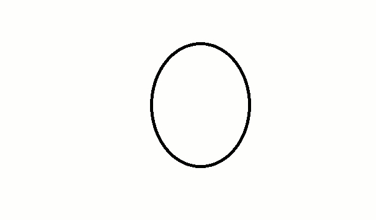

Con la misma henchida satisfacción de una gallina, de tanto en tanto Lucas pone un soneto. Nadie se extrañe: huevo y soneto se parecen por lo riguroso, lo acabado, lo terso, lo frágilmente duro. Efímeros, incalculables, el tiempo y algo como la fatalidad los reiteran, idénticos y monótonos y perfectos.
Así, a lo muy largo de su vida Lucas ha puesto algunas docenas de sonetos, todos excelentes y algunos decididamente geniales. Aunque el rigor y lo cerrado de la forma no dejan mayor espacio para la innovación, su estro (en primera y también en segunda acepción) ha tratado de verter vino nuevo en odre viejo, apurando las aliteraciones y los ritmos, sin hablar de esa vieja maniática, la rima, a la cual le ha hecho hacer cosas tan extenuantes como aparear a Drácula con mácula. Pero hace ya tiempo que Lucas se cansó de operar internamente en el soneto y decidió enriquecerlo en su estructura misma, cosa aparentemente demencial dada la inflexibilidad quitinosa de este cangrejo de catorce patas.
Así nació el Zipper Sonnet, título que revela culpable indulgencia hacia las infiltraciones anglosajonas en nuestra literatura, pero que Lucas esgrimió después de considerar que el término «cierre relámpago» era penetrantemente estúpido, y que «cierre de cremallera» no mejoraba la situación. El lector habrá comprendido que este soneto puede y debe leerse como quien sube y baja un «zipper», lo que ya está bien, pero que además la lectura de abajo arriba no da precisamente lo mismo que la de arriba abajo, resultado más bien obvio como intención pero difícil como escritura.
A Lucas lo asombra un poco que cualquiera de las dos lecturas den (o en todo caso le den) una impresión de naturalidad, de por supuesto, de pero claro, de elementary my dear Watson, cuando para decir la verdad la fabricación del soneto le llevó un tiempo loco. Como causalidad y temporalidad son omnímodas en cualquier discurso apenas se quiere comunicar un significado complejo, digamos el contenido de un cuarteto, su lectura patas arriba pierde toda coherencia aunque cree imágenes o relaciones nuevas, ya que fallan los nexos sintácticos y los pasajes que la lógica del discurso exige incluso en las asociaciones más ilógicas. Para lograr puentes y pasajes fue preciso que la inspiración funcionara de manera pendular, dejando ir y venir el desarrollo del poema a razón de dos o a lo más tres versos, probándolos apenas salidos de. la pluma (Lucas pone sonetos con pluma, otra semejanza con la gallina) para ver si después de haber bajado la escalera se podía subirla sin tropezones nefandos. El hic es que catorce peldaños son muchos peldaños, y este Zipper Sonnet tiene en todo caso el mérito de una perseverancia maniática, cien veces rota por palabrotas y desalientos y bollos de papel al canasto pluf.
Pero al final, hosanna, hélo aquí el Zipper Sonnet que sólo espera del lector, aparte de la admiración, que establezca mental y respiratoriamente la puntuación, ya que si esta figurara con sus signos no habría modo de pasar los peldaños sin tropezar feo.
ZIPPER SONNET
de arriba abajo o bien de abajo arriba
este camino lleva hacia sí mismo
simulacro de cima ante el abismo
árbol que se levanta o se derriba
quien en la alterna imagen lo conciba
será el poeta de este paroxismo
en un amanecer de cataclismo
náufrago que a la arena al fin arriba
vanamente eludiendo su reflejo
antagonista de la simetría
para llegar hasta el dorado gajo
visionario amarrándose a un espejo
obstinado hacedor de la poesía
de abajo arriba o bien de arriba abajo
¿Verdad que funciona? ¿Verdad que es —que son— bello (s)?
Preguntas de esta índole hacíase Lucas trepando y descolgándose a y de los catorce versos resbalantes y metamorfoseantes, cuando héte aquí que apenas había terminado de esponjarse satisfecho como toda gallina que ha puesto su huevo tras meritorio empujón retro-propulsor, desembarcó procedente de Sao Paulo su amigo el poeta Haroldo de Campos, a quien toda combinatoria semántica exalta a niveles tumultuosos, razón por la cual pocos días después Lucas vio con maravillada estupefacción su soneto vertido al portugués y considerablemente mejorado como podrá verificarse a continuación:
ZIPPER SONNET
de cima abaixo ou jà de baixo ácima
este caminho é o mesmo em seu tropismo
simulacro de cimo frente o abismo
árvore que ora alteia ora declina
quem na dupla figura assim o imprima
será o poeta deste paroxismo
num desanoitecer de cataclismo
náufrago que na areia ao fim reclina
iludido a eludir o seu reflexo
contraventor da própria simetria
ao ramo de ouro erguendo o alterno braco
visionario a que o espelho empresta um nexo
refator contumaz desta poesia
de baixo ácima o ja de cima abaixo.
«Como verás», le escribía Haroldo, «no es verdaderamente una versión: más bien una "contraversión" muy llena de licencias. Como no pude obtener una rima consonante adecuada para ácima (arriba), cambié la convención legalista del soneto y establecí una rima asonante, reforzada por la casi homofonía de los sonidos nasales m y n (aciMA y decliNA). Para justificarme (prepararme un alibi) repetí el procedimiento infractor en los puntos correspondientes de la segunda estrofa (escamoteo vicioso, trastrocado por una seudosimetría también perversa)».
A esta altura de la carta Lucas empezó a decirse que sus fatigas zipperianas eran poca cosa frente a las de quien se había impuesto la tarea de rehacer lusitanamente una escalera de peldaños castellanos. Trujamán veterano estaba en condiciones de valorar el montaje operado por Haroldo; un bello juego poético inicial se potenciaba y ahora, cosa igualmente bella, Lucas podía saborear su soneto sin la inevitable derogación que significa ser el autor y tender por lo tanto e insensatamente a la modestia y a la autocrítica. Nunca se le hubiera ocurrido publicar su soneto con notas, pero en cambio le encantó reproducir las de Haroldo, que de alguna manera parafraseaban sus propias dificultades a la hora de escribirlo.
«En los tercetos», continuaba Haroldo, «dejo firmada (confesada y atestiguada) mi infelix culpa dragománica (N.B.: dragomaníaca). El «antagonista» de tu soneto es ahora explícitamente un «contraventor»; el «obstinado hacedor de la poesía», un re-fator contumaz (sin pérdida de la connotación forense...) desta poesía (de este poema, del Zipper Sonnet), Ultima signatura del échec impuni: braco (brazo) rimando imperfectamente con abaixo (abajo) en los versos terminales de los dos tercetos. Hay también un adjetivo «migratorio»: alterna, que salta del primer verso de tu segunda estrofa («alterna imagen») para insinuarse en el último de mi terceto segundo, «alterno braco» (¿el gesto del traductor como otredad irredenta y duplicidad irrisoria?).»
En el balance final de este sutil trabajo de Aracné, agregaba Haroldo: «La métrica, la autonomía de los sintagmas, la ziplectura al revés, sin embargo, quedaron a salvo sobre las ruinas del vencido (aunque no convencido) traditraduttore; quien así, "derridianamente", por no poder sobrepasarlas, difiere sus diferencias (différences)...».
También Lucas había diferido sus diferencias, porque si un soneto es de por sí una relojería que sólo excepcionalmente alcanza a dar la hora justa de la poesía, un zipper sonnet reclama por un lado el decurso temporal corriente y, por otro, la cuenta al revés, que lanzarán respectivamente una botella al mar y un cohete al espacio. Ahora, con la biopsia operada por Haroldo de Campos en su carta, podía tenerse una idea de la máquina; ahora se podía publicar el doble zipper argentino-brasileño sin irrumpir en la pedantería. Animado, optimista, mishkinianamente idiota como siempre, Lucas empezó a soñar con otro zipper sonnet cuya doble lectura fuera una contradicción recíproca y a la vez la fundación de una tercera lectura posible. A lo mejor alcánzala a escribirlo; por ahora el balance es una lluvia de bollos de papel, vasos vacíos y ceniceros llenos. Pero de cosas así se alimenta la poesía, y en una de esas quién te dice, o le dice a un tercero que recogerá esa esperanza para una vez más colmar, calmar a Violante.